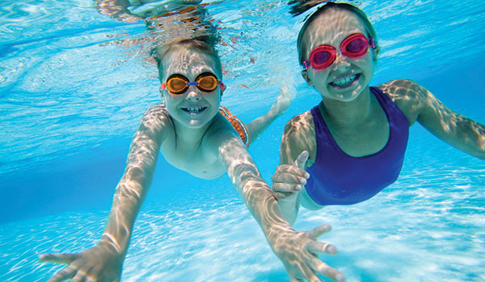

Welcome
About the Pool
In Just Keep Swimming we specialize in providing unique and satisfying service to our clients. This centre boast three pools, leisure pool, therapy pool and olympic pool.
The leisure pool is 35 metres in length and has four lanes, an accessible chair lift the areas largest indoor water slide, water bubbling features, water rain shower and spray jets. This pool is utilized for public swims, lane swims, aqua fitness, swimming lessons, birthday parties, day camps and pool rentals. The therapy pool is a shallow pool with wheelchair ramp, and a swirl-pool. This pool is used for gentle aqua fitness, swimming lessons, public swims, nursery swims and post natal aqua fitness. The olympic pool is use for club tarining, tournaments and conests.
Our Services
As you can see, we offer a wide variety of services; it is important to check the schedule in order to know what classes/times fits you best.
Announcements
- Check the new rates and discounts for Students and Seniors!
Winter Swimming Lesson Start the second Monday of January. Registration sheets can be Now found at the pool canteen.
Check the our new line of products at the kiosk in the main pool.
Contact
We are located at 1325 Rosabella Dr, Ottawa, Ontario.
Bussiness Hours from 6:00am to 10:00pm.
Telephone: 613-324-32-23
Fax: 613-324-23-32